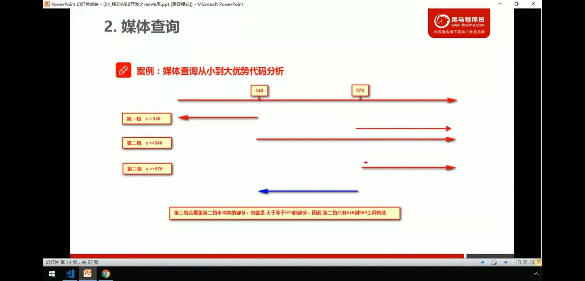

em和rem的区别em rem媒体查询根据不同大小改变颜色媒体查询+rem实现元素动态大小针对不通屏幕大小 调用不同的css文件rem适配方案rem实际开发适配方案rem适配方案技术使用（市场主流）less+rem+媒体查询实战预览地址：http://zmlong.usa3v.net/html/project/less_rem_media/index.html
em和rem的区别
em
em是相对于父级文字大小来说的
- x1
<style>2.box {3font-size: 12px;4}56p {7width: 10em;8height: 10em;9background-color: pink;10}11</style>1213<body>14<div class="box">15<p></p>16</div>17</body> em很难实现整体控制效果，因为页面中父元素的字体大小都不一样
注意：任意浏览器的默认字体高都是16px。所有未经调整的浏览器都符合: 1em=16px。那么12px=0.75em,10px=0.625em。为了简化font-size的换算，需要在css中的body选择器中声明Font-size=62.5%，这就使em值变为 16px*62.5%=10px, 这样12px=1.2em, 10px=1em, 也就是说只需要将你的原来的px数值除以10，然后换上em作为单位就行了。
rem
rem （root em，根em）是相对 页面中的html文字大小来说的
xxxxxxxxxx101html {2font-size: 12px;3}45.box {6width: 15rem;7height: 15rem;8background-color: purple;9}10rem的优点就是可以通过修改html里面的文字大小来改变页面中元素的大小，可以实现整体控制效果
也就说 使用rem可以使页面的大小 根据 html的文字大小而改变
兼容性
xxxxxxxxxx11p {font-size:14px; font-size:.875rem;}如果是进行的移动端开发就不用考虑兼容性了，IE8之前 这样处理兼容，不支持rem的会直接忽略。
媒体查询
- 语法规范
xxxxxxxxxx31@media mediatype and|not|only (media featrue) {23}@media代表声明媒体查询
mediartpe 是媒体类型
- all 用于所有设备
- print 打印机
- scree 电脑屏幕、平板电脑、智能手机
关键字 and not only
- and 并且的意思 媒体特性链接到一起
- not 排除某个媒体特性
- only 指定特定的媒体类型
media featrue 媒体特性 必须有小括号
- width 定义输出设备中页面可视区域的宽度
- min-width 定义输出设备中页面最小可视区域
- max-width 定义输出设备中页面最大可视区域
xxxxxxxxxx61 /* 在800像素以内 */2 @media screen and (max-width:800px) {3 body {4 background-color: pink;5 }6 }根据不同大小改变颜色
xxxxxxxxxx201 /* 在539像素以内 */2 @media screen and (max-width:539px) {3 body {4 background-color: palegreen;5 }6 }78 /* 超过540像素 */9 @media screen and (min-width:540px) {10 body {11 background-color: pink;12 }13 }1415 /* 超过970像素 */16 @media screen and (min-width:970px) {17 body {18 background-color: purple;19 }20 }
- 尽量从小到大或者从大到小的写，因为样式有层叠性 后面的样式会把前面的给覆盖掉
媒体查询+rem实现元素动态大小
xxxxxxxxxx291 <style>2 .box {3 width: 100%;4 height: 10rem;5 background-color: pink;6 text-align: center;7 line-height: 10rem;8 font-size: 5rem;9 color: aliceblue;10 }1112 /* 超过320px的 */13 @media screen and (min-width:320px) {14 html {15 font-size: 8px;16 }17 }1819 /* 超过640px的 */20 @media screen and (min-width:640px) {21 html {22 font-size: 16px;23 }24 }25 </style>2627<body>28 <div class="box">我是文字</div>29</body>- 通过媒体查询改变html的文字大小 也就 改变了元素大小
针对不通屏幕大小 调用不同的css文件
- 建议从小到大写
xxxxxxxxxx91 <!-- 屏幕尺寸大于320时 -->2 <link rel="stylesheet" href="style320.css" media="screen and (min-width:320px)">3 <!-- 屏幕尺寸大于640时 -->4 <link rel="stylesheet" href="style640.css" media="screen and (min-width:640px)">56<body>7 <div></div>8 <div></div>9</body>rem适配方案
- 让一些不能等比自适应的元素，达到当设备尺寸发生改变的时候 等比例适配当前设备。
- 使用媒体查询根据不同设备按比例设置html的字体大小，然后页面元素使用rem做尺寸单位，当html字体大小改变，元素尺寸也会发生改变，从而达到等比所放的适配
rem实际开发适配方案
- 按照设计稿与设备宽度的比例，动态计算并设置html跟标签的font-size大小（媒体查询）
- css中，设计稿元素的宽、高、相对位置等取值，按照同等比例换算为rem为单位的值
rem适配方案技术使用（市场主流）
技术方案1
- less
- 媒体查询
- rem
less方便计算rem，媒体查询动态改变大小，rem自适应布局
技术方案2
- flxible.js
- rem
相比方案1 这个更简单一些
less+rem+媒体查询
| 设备 | 常见宽度 |
|---|---|
| iPhone4、5 | 640px |
| iPhone6、7、8 | 750px |
| android | 常见320px , 360px , 375px , 384px , 400px, 414px , 500px , 720px , 大部分4.7-5.0寸的手机安卓设备为720px |
- 首先选一套标准尺寸 750为准
- 用屏幕尺寸 / 划分的份数 得到 html里的文字大小 750 / 15 = html的文字大小 （划分不一定非要是15 也可以是10，20）
- 页面元素的rem值 = 原始px / html的文字大小
xxxxxxxxxx191 /* 大于等于320的时候 */2 @media screen and (min-width:320px) {3 html {4 font-size: 21.3px;5 }6 }78 /* 大于等于750的时候 */9 @media screen and (min-width:750px) {10 html {11 font-size: 50px;12 }13 }1415 div {16 width: 2rem;17 height: 2rem;18 background-color: pink;19 }只需围绕一套标准的去计算就行了，其他的根据媒体查询自动改大小 也就同样得到了适配
比如
xxxxxxxxxx151// 定义一个750的标准（750 / 15 = 50）2@baseFont:50px;3input{4width: 100%;5height: 66rem / @baseFont;6border:0;7outline: none;8font-size: 25rem / @baseFont;9color: #757575;10border-radius: 44rem / @baseFont;11margin-top: 12rem / @baseFont;12background-color: #FFF2CC;13padding-left: 55rem / @baseFont;14box-sizing:border-box;15}这里的50只是在750标准下划分15份得到的px，最终改变元素的大小还是看媒体查询里面的文字大小
注意单位问题
用less给每一个尺寸进行划分
xxxxxxxxxx841// 我们此次定义的划分的份数 为 152// rem算法：屏幕元素的px / (标准屏幕大小 / 切的份数)3// 给个默认的文字大小（750）后面的会把前面的层叠掉4html {5 font-size: 50px;6}7@no: 15;8// 3209@media screen and (min-width: 320px) {10 html {11 font-size: 320px / @no; 12 }13}14// 36015@media screen and (min-width: 360px) {16 html {17 font-size: 360px / @no;18 }19}20// 375 iphone 67821@media screen and (min-width: 375px) {22 html {23 font-size: 375px / @no;24 }25}2627// 38428@media screen and (min-width: 384px) {29 html {30 font-size: 384px / @no;31 }32}3334// 40035@media screen and (min-width: 400px) {36 html {37 font-size: 400px / @no;38 }39}40// 41441@media screen and (min-width: 414px) {42 html {43 font-size: 414px / @no;44 }45}46// 42447@media screen and (min-width: 424px) {48 html {49 font-size: 424px / @no;50 }51}5253// 48054@media screen and (min-width: 480px) {55 html {56 font-size: 480px / @no;57 }58}5960// 54061@media screen and (min-width: 540px) {62 html {63 font-size: 540px / @no;64 }65}66// 72067@media screen and (min-width: 720px) {68 html {69 font-size: 720px / @no;70 }71}7273// 75074@media screen and (min-width: 750px) {75 html {76 font-size: 750px / @no;77 }78}79// 96080 @media screen and (min-width:960px){81 html{82 font-size: 960px / @no;83 }84 }可以把这个文件单独写，利用less的导入 到index.css里面
建议给body加上最小宽度和最大宽度
xxxxxxxxxx21min-width:320px;2max-width:750px;320是手机最小宽度，750是标准手机宽度，当然也可以写的更大